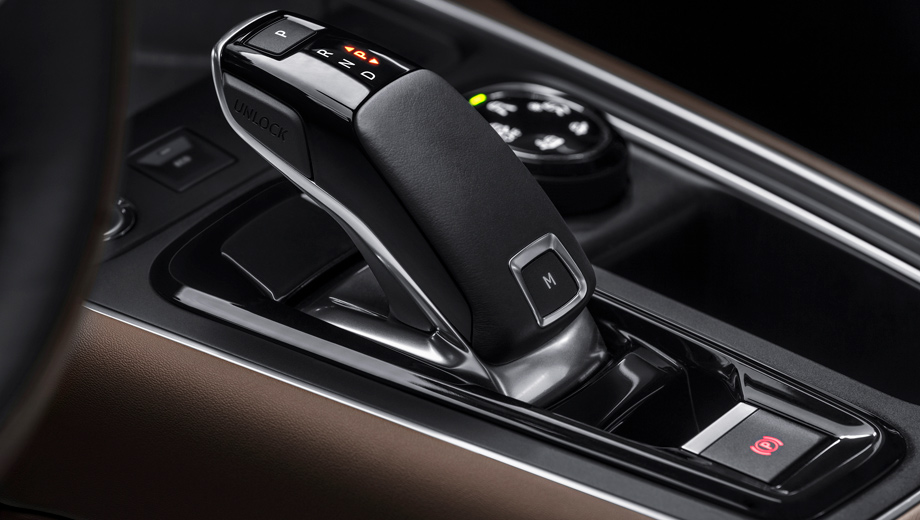

Lo más destacado del Nuevo Citroen

El New SUV C5 Aircross proporciona a los pasajeros sistemas intuitivos a la vanguardia de la tecnología para ofrecerles continuidad entre su universo digital y su automóvil: la pantalla de 8″ táctil capacitiva, que permite a los usuarios ajustar la configuración de su automóvil, acceder al sistema multimedia, teléfono, aire acondicionado y sistema de navegación, así como: la función Mirror Screen y Citroën Connect Nav. La carga inalámbrica de teléfonos inteligentes completa esta oferta extendida de conectividad.
Es en serio cuando decimos que el Spark GT está preparado para adaptarse a ti. Con las distintas posiciones de los asientos traseros puedes transformarlo y llevar todo lo que quieras.
Chevrolet Spark GT se desarrolló para cuidarte en cada ruta. La cabina envuelve a los ocupantes en su jaula de seguridad, la cual cuenta con zonas de deformidad programada para reducir riesgos en caso de accidente.
Si por fuera te parece atractivo, por dentro te dejará sin aliento. Chevrolet Spark GT es capaz de emocionar a todo aquel que quiera dar un paseo en él porque cuenta con una pantalla táctil de 7” con integración a Apple CarPlay TM & Android Auto TM y además cámara de retroceso.